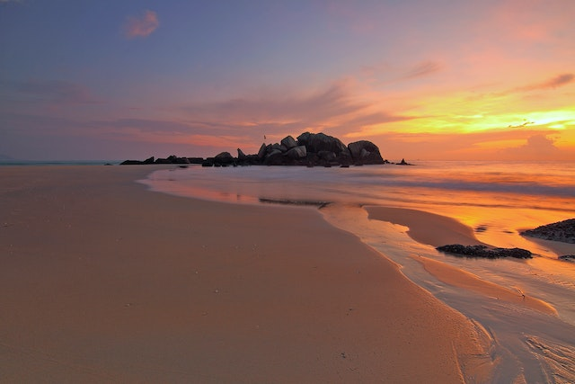

As praias são verdadeiros paraísos na Terra, onde a terra encontra o mar em uma dança eterna de beleza e tranquilidade. O som suave das ondas quebrando na costa, a brisa salgada que acaricia a pele e a vastidão do oceano que se estende até onde os olhos podem ver criam uma atmosfera única de serenidade e admiração. Nas praias, as preocupações cotidianas se dissipam sob o sol quente, enquanto os pés afundam na areia macia e os corações se enchem de alegria. Cada praia tem sua própria personalidade, seja com areias douradas ou rochosas, águas calmas ou agitadas, mas todas compartilham a magia de nos conectar com a natureza de maneira profunda e revigorante. É nessas margens que encontramos a paz e a renovação, e onde criamos memórias preciosas que duram para toda a vida.
A beleza das praias



A beleza das montanhas


As montanhas, imponentes e majestosas, desafiam os céus e enriquecem nossa conexão com a natureza. Com picos que tocam as nuvens e vales profundos esculpidos pelo tempo, essas formações geológicas oferecem paisagens de tirar o fôlego e habitats únicos para uma variedade de vida selvagem. Além de sua beleza, as montanhas desempenham um papel importante na regulação climática, no abastecimento de água doce e na cultura humana, inspirando aventuras e reflexões ao longo da história.